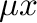

Next: Common mistakes Up: Troubleshooting Previous: Forum
Q. I can do a least-squares by hand with a much lower mean square error (MSE) than MAPS can. Yet, you claim that MAPS is “optimal”. How is this possible?
A. The MSE is not a very good measure of the predictive power of a cluster expansion. It can be made arbitrarily close to zero but merely including enough ECI in the fit! But having a small MSE is no guarantee that the error on the predicted energy of structures not inlcuded in the fit is small. The cross-validation (CV) score, which is used in MAPS, is a better measure of the predictive power of a least-squares fit. The CV score does not systematically decrease as the number of ECI increases and it has been shown that choosing the number of ECI such that the CV score is minimized is an asymptotically optimal strategy. Researchers often have a tendency to use too many ECI because this appears to reduce the error, but this is a illusion. MAPS gives you an unbiased estimaqte of the prediction error, and the magnitude of that number is larger than many would like to believe.
Q. MAPS is frozen. What is going on?
A. MAPS sometimes needs a few minutes to generates new clusters or structures. This is a complex operation, be patient. This generation can occur in the middle of the calculations (finding the best cluster expansion or the best structures) because MAPS only generates these clusters or structures when they are needed.
Q. Where are the results?
A. In a variety of files whose descriptions you can view by typing maps -h | more. A utility called mapsrep lets you display the most useful output data using gnuplot.
Q. What files do I need to get started with MAPS?
A. A lat.in files to specify the geometry of the lattice and a “wrapping” file that specifies the parameters of the first-principles code. If you are using vasp, this file is usually called vasp.wrap. Examples of those files can be found in the example directory.
Q. I already have structures and energies. What if I just want to fit them?
A. You need a lat.in files to specify the geometry of the lattice and you need to create one subdirectory for each structure (name them as you which). In each subdirectory, you need a str.out file to specify the geometry of the structure and an energy file to indicate the energy of that structure. For the format of those files, type maps -h | more. Note that the energy must per unit cell of the structure (not the lattice).
Q. When I type maps I only get the command line option help. How can I run it?
A. Type maps -d to use all the default options. You can also specify any option you want. Either way, the help message will not be displayed and the code will run. If the help is still displayed, it is because there is an error in the options you specified.
Q. When I superimpose the energies of fit.out with the energies obtained from the Monte Carlo code, I can see that they don't match. What is happening?
A. The “energies” given by the Monte Carlo code are in fact so you need to add  to get the true energy. Use the -g2c option to tell the Monte Carlo code to output the true energy.
Q. How can I verify that the structures do not relax to a superstructure of a different type of lattice (e.g. fcc becoming bcc)?
A. Run the utility called checkrelax. It will give you a list all structures along with a measure of the strain they each experienced during relaxation.
Q. When I look at the calculated and fitted energies in the fit.out file there are structures where the difference is very large.
A. Make sure that these structures have properly relaxed. A common problem is to start the first-principles calculations with an unrelaxed geometry where the atoms are too close to one another. Restart the energy calculations of the offending structures by using larger starting volumes.
Q. My input files seem correct but ATAT utilities crash while reading them.
A. Make sure your files have unix-style end-of-lines. The fixeol -u yourinputfile command should fix that issue.
avdw@alum.mit.edu Wed, Dec 6, 2023 12:55:16 PM